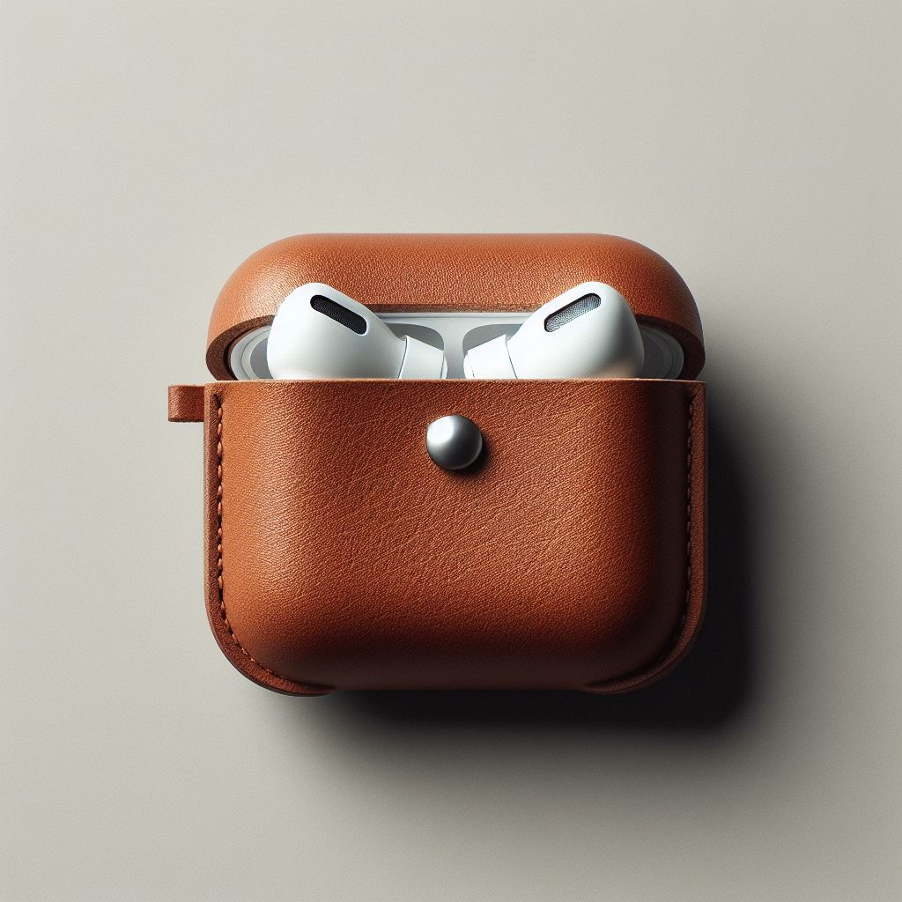

ruiaithuba
レザークラフトを趣味にしています。レザー生地の種類には沢山ありますが、私が気に入ってる 栃木レザーや姫路レザーで製作しています。今主に製作してるものとしてAirPodsProや システム手帳、ブックカバーを楽しんで作っています。
レザークラフトを趣味にしています。レザー生地の種類には沢山ありますが、私が気に入ってる 栃木レザーや姫路レザーで製作しています。今主に製作してるものとしてAirPodsProや システム手帳、ブックカバーを楽しんで作っています。